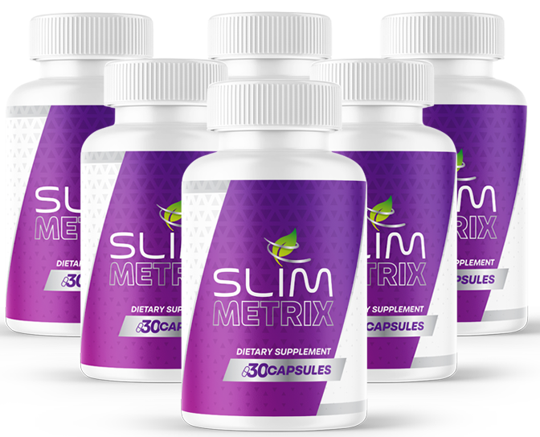

What Is SlimMetrix And How Does It Work?
Your metabolism isn't broken. It's misfiring.
That distinction matters more than it sounds like it should. A broken engine won't start at all. A misfiring one runs — just badly. It burns fuel unevenly, sputters when it should be smooth, and leaves you stalled out at the exact moments you need power the most. That's a closer picture of what's actually happening when the scale won't move, the 3pm slump hits like clockwork, and every craving feels bigger than your willpower.
Think of your body's metabolism the way you'd think of a car engine. When the spark timing is off, the engine doesn't stop — it just stops burning fuel cleanly. Some of it goes unused and gets stored instead of spent. Power comes in short bursts followed by a stall. And the engine keeps signaling for more fuel, because what it already has isn't being converted the way it should be. That last part is what a craving actually is: not a lack of discipline, but a metabolic misfire asking for fuel it can't efficiently use yet.
SlimMetrix is a once-daily capsule built to work on that spark, not just throw more fuel at the problem. It pairs two clinically-studied trace minerals — Chromium and Zinc — with a 276 mg botanical blend anchored by green tea EGCG and berberine, formulated to support the body's natural fat-metabolism pathways, steady the blood sugar, and keep energy running level instead of spiking and crashing.
One capsule. Taken preferably in the morning. No powders to mix, no three-times-a-day routine to forget by Wednesday.
This isn't framed as an overnight fix, and it shouldn't be. A misfire that built up over years of stress, aging, and stalled metabolism doesn't get re-timed in a single dose — it gets corrected the same way it developed: gradually, with consistent daily use, alongside the basic habits that were already working in your favor.
SlimMetrix Ingredients
Every ingredient in SlimMetrix has one job: help the engine burn what it's given instead of letting it idle.
- Chromium (as Chromium Picolinate) — 50 mcg, 41.67% DV: The trace mineral most directly tied to how efficiently the body handles blood sugar. It supports insulin sensitivity, which is the mechanism behind steadier glucose levels and, for a lot of people, fewer out-of-nowhere sweet cravings.
- Zinc (as Zinc Gluconate) — 5.5 mg, 50% DV: An essential mineral involved in dozens of metabolic enzyme reactions, plus immune defense and hormonal balance — the quiet infrastructure work that keeps the rest of the formula functioning properly.
- Green Tea Extract — 50% EGCG, 80% Catechins: The catechin most studied for thermogenesis — the process of the body generating heat by burning fuel. Standardized to a specific EGCG concentration rather than a vague "green tea powder."
- Berberine — 97%, from Berberis aristata: Often called nature's metabolic molecule. Studied for its role in supporting fat-metabolism pathways and a lipid profile that's already within a normal, healthy range.
- 276 mg Botanical Blend — Resveratrol, Milk Thistle (80% Silymarin), Cayenne (40,000 HU), Korean Ginseng (8% ginsenosides), Banaba (2% Corosolic Acid) and Alpha Lipoic Acid: A supporting cast that rounds out the formula — antioxidant defense, liver support, gentle thermogenic warmth, and steady cellular energy, working alongside the two headline minerals rather than competing with them.
Ten actives and botanicals, each doing a different, specific job — trace minerals handling the spark, catechins and berberine handling the burn, the rest of the blend keeping the whole system running clean. That's the difference between a formula and a random pile of trending ingredients.
SlimMetrix Side Effects
Here's the part people brace for and usually don't need to.
Nothing in SlimMetrix is a foreign compound your body has to figure out how to process. Chromium and zinc are trace minerals your cells already use every day. Green tea catechins and berberine are plant compounds with a long history of dietary use. This is a formula of naturally-sourced actives at supportive levels, not a synthetic stimulant stack designed to force a reaction.
The capsules are produced in a GMP-Certified facility and are third-party tested, with a finished label that's free of added sugar, gluten, dairy, soy, and artificial dyes or flavors — the kind of production standard that tends to correlate with a well-tolerated daily supplement rather than one that causes trouble.
As with any dietary supplement, check with a healthcare professional first if you're pregnant, nursing, taking medication, or managing an existing medical condition.
SlimMetrix Dosage
One capsule. Once a day. That's the entire routine.
Each bottle holds a 30-day supply, and the label calls for one capsule daily, preferably in the morning, with or without food — no titration schedule, no stacking multiple pills throughout the day, nothing complicated enough to fall off after a stressful week. Most people notice shifts in energy and cravings within 7 to 14 days; visible changes tend to show up with consistent use across 60 to 90 days, alongside the basic habits already in place.
That timeline is exactly why the six-bottle option — the one most customers land on, and the one that ships free — exists as more than an upsell. A spark that's been off for years isn't re-timed by a single bottle. Whichever size fits your plan, don't exceed the labeled daily dose; consistency, not intensity, is what actually re-times the engine.
SlimMetrix – Refund Policy
Every SlimMetrix order carries a 60-day money-back guarantee.
Sixty days is enough time to run the formula well past the point most people start noticing a difference — long enough to judge honestly whether the crashes, the cravings, and the stalled scale actually shifted. A company confident in what's inside the capsule can afford to offer that much time; one selling a placebo usually can't.
Full terms, eligibility, and how to request a refund are listed on the official SlimMetrix website.
SlimMetrix Customer Reviews
 Hailey Anderson
Tulsa, OK
Verified Purchase – 3 Bottles
Hailey Anderson
Tulsa, OK
Verified Purchase – 3 Bottles
"I used to hit a wall by 3pm every single day — coffee, snacks, whatever was closest, none of it lasted. A few months into SlimMetrix and my afternoons just feel different. No more crash-and-burn around 3, no more raiding the vending machine without even deciding to. Easy to take, and honestly the first thing that's stuck past week two."
 Dana Holloway
Boise, ID
Verified Purchase – 6 Bottles
Dana Holloway
Boise, ID
Verified Purchase – 6 Bottles
"I'd dealt with bloating and a metabolism that felt permanently stuck for years — tried the crash diets, tried cutting carbs completely, landed on the same plateau every time. SlimMetrix made a real difference in under two weeks. I feel lighter, my appetite finally feels manageable instead of constant, and I stopped mentally negotiating with every meal."
 Megan Sinclair
Reno, NV
Verified Purchase – 2 Bottles
Megan Sinclair
Reno, NV
Verified Purchase – 2 Bottles
"What sold me is what's NOT in it. I'd already burned money on fat-burners with twenty ingredients I couldn't pronounce and a heart rate that spiked every time I took one. SlimMetrix is chromium, berberine, green tea, a clean botanical blend — that's it. No jitters, no crash. I can actually feel it working instead of just hoping it is."
SlimMetrix – Where To Buy
Where you buy this determines whether the guarantee behind it means anything.
SlimMetrix isn't sold through Amazon, eBay, or Walmart. Listings that look official sometimes surface there anyway, and with a formula built on specific dosages — 50 mcg of chromium, 97% berberine, 50% EGCG green tea — there's no way to verify from a marketplace photo that what's inside the bottle matches the label, or how it was stored before it reached your door.
There's a second, bigger cost to buying around the official source: the 60-day money-back guarantee only exists for orders placed directly through it. A marketplace purchase never reaches the manufacturer, which means the safety net you thought you had was never actually attached to that transaction — and neither was real customer support.
To ensure you're getting the authentic product, most users choose to visit the official website directly.
Is SlimMetrix A Scam?
No — and the clearest sign is what this formula doesn't do.
This category is flooded with products promising a total transformation in days, powered by a stimulant jolt that spikes your heart rate and crashes just as hard a few hours later. SlimMetrix doesn't play that game. It names its ingredients and their exact dosages instead of hiding behind a vague "proprietary complex," it's produced in a GMP-Certified, third-party tested facility, and it frames its real timeline honestly — 7 to 14 days for the first shifts, 60 to 90 days for changes that stick.
That's the whole idea behind fixing a metabolic misfire instead of masking it: you're not forcing the engine to rev harder on a stimulant it'll crash from later. You're helping it burn what it already has more efficiently, one morning capsule at a time.
If it's not for you, that's genuinely fine — plenty of people manage their metabolism a different way, and no capsule replaces a conversation with a doctor about a real medical condition. But if what you're actually dealing with is the 3pm slump, the cravings that show up before you've decided to want them, and a scale that hasn't moved in months, the math is simple: try it for the sixty days you're guaranteed. If nothing shifts, you send it back and you're out nothing but the wait.
As with any dietary supplement, check with a healthcare professional first if you have an existing medical condition or take prescription medication.
For those who want to verify product details or check current availability, the official SlimMetrix website remains the safest and most reliable option.
